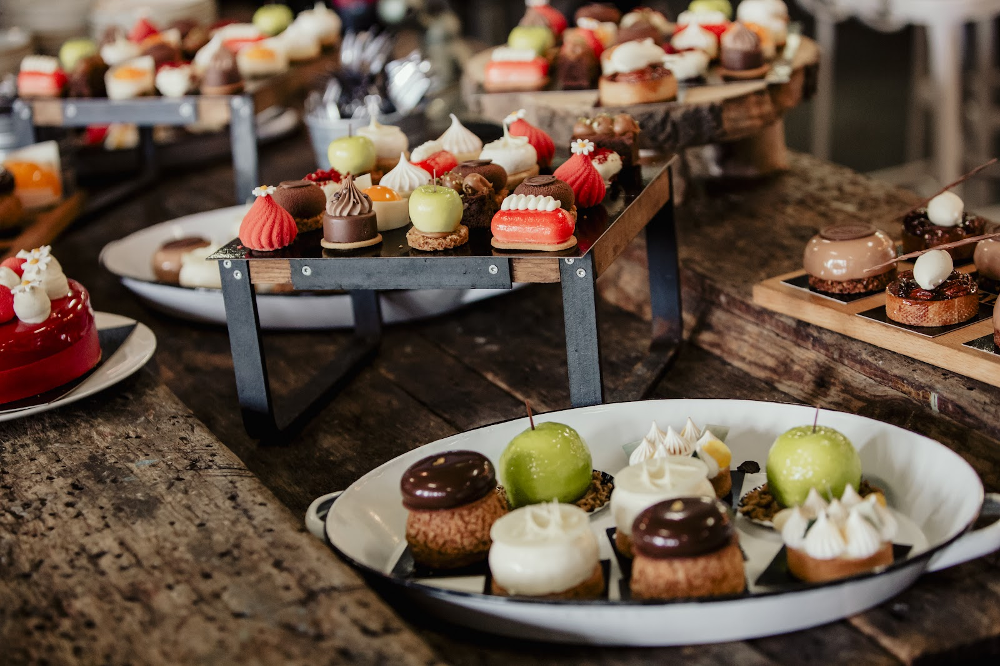
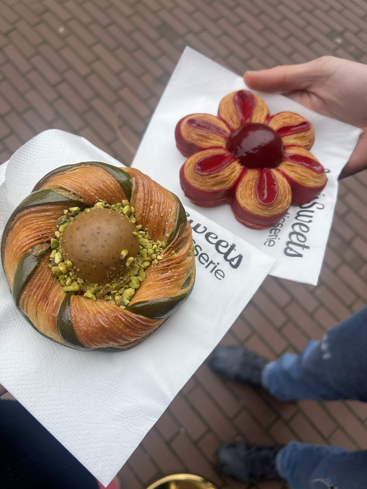
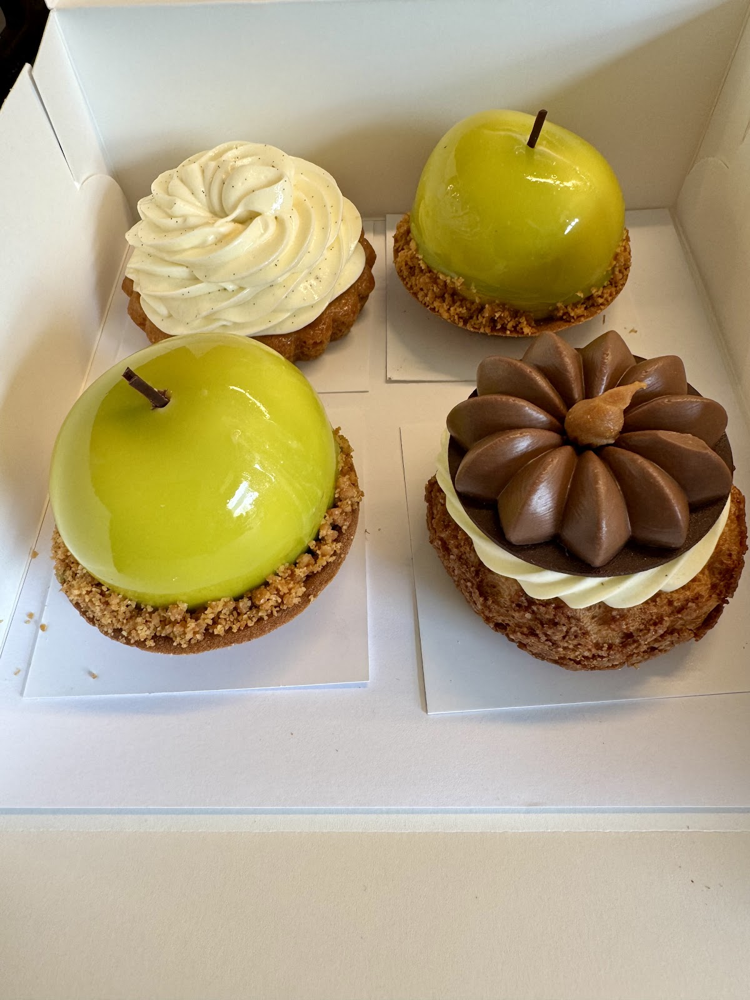
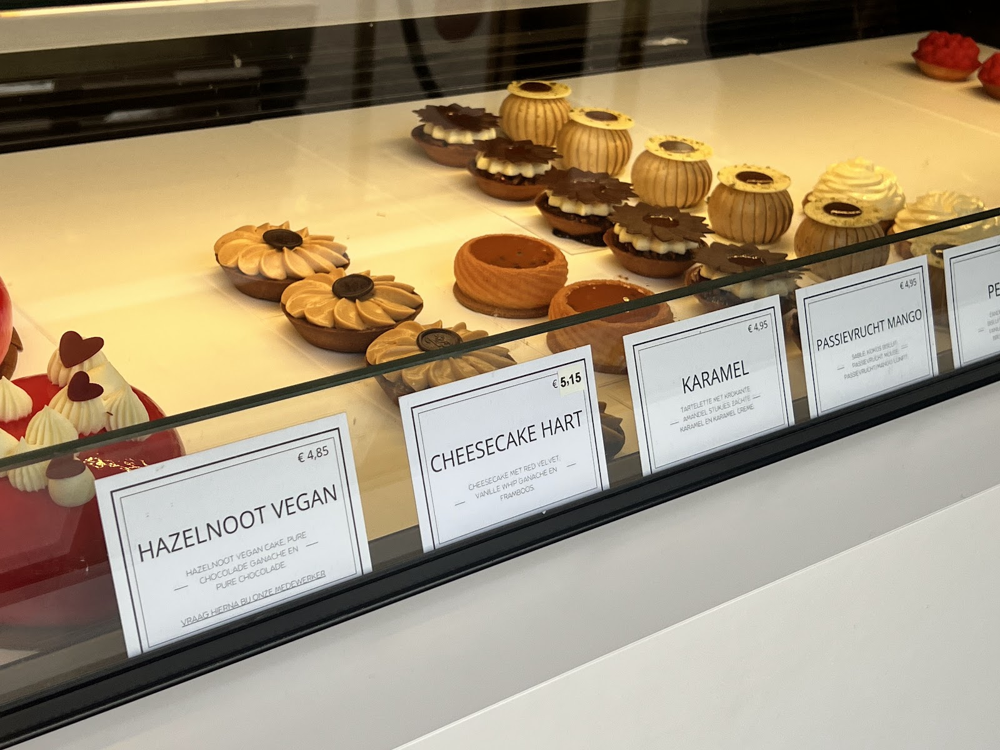
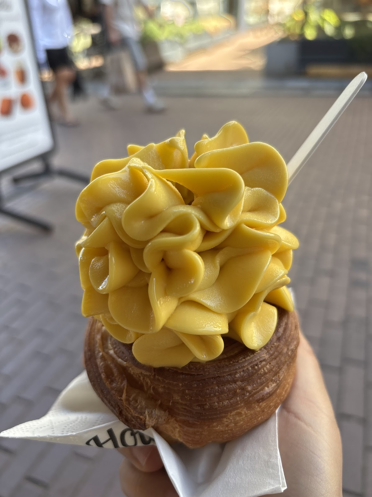
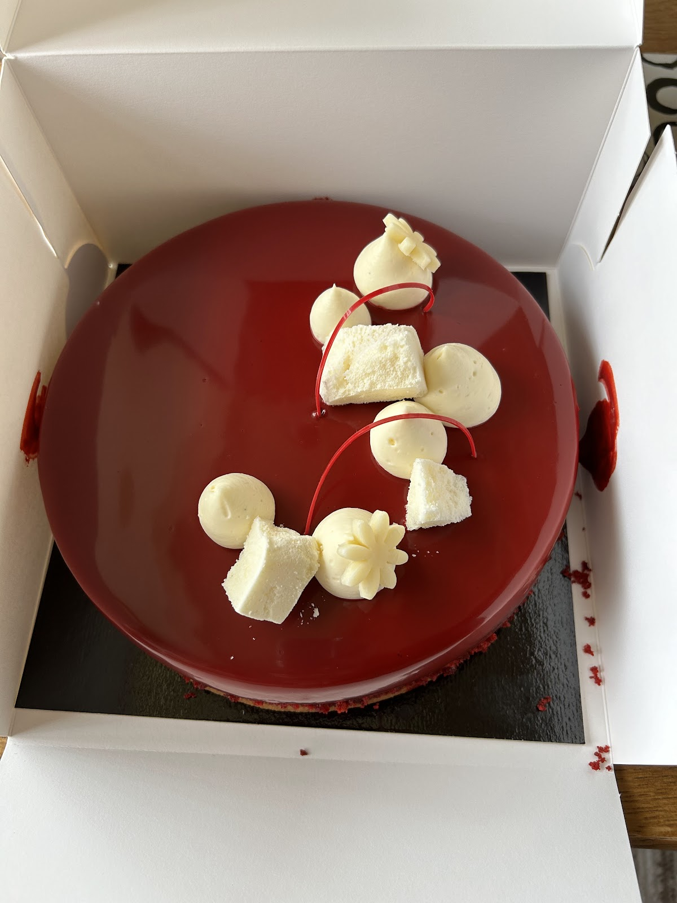
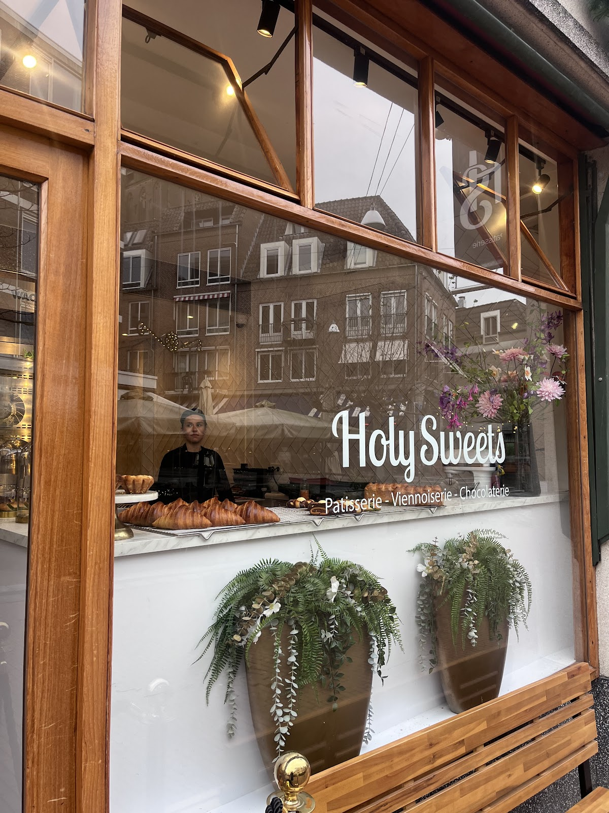

Houtstraat 63, Nijmegen
Gebak dat een omweg waard is.
Taartjes, croissants en chocolade van Roel en zijn team. Mooi om te zien, vers gemaakt en betaalbaar.

Patisserie
Kleine taartjes, hele taarten en een doos vol verschillende gebakjes om te delen. Of niet.
Viennoiserie
Croissantdeeg in alle vormen: van amandelcroissant tot een bloem met framboos.
Chocolaterie
Chocolade in het gebak en erop. En verder: broodjes en ijs voor wie even blijft hangen.
Uit de vitrine, in de woorden van onze gasten.
Wat er ligt wisselt. Kom kijken wat er vandaag in de vitrine staat.

"Geproefd: frambozentaartje (mijn favoriet), pistache taartje (mijn vriendin's favoriet) en een frambozen bloem van croissantdeeg. Supervers en erg smakelijk."

"De box van meerdere kleine gebakjes is onze favoriet, je proeft echt de kwaliteit."

"Zijn gebak en taartjes zijn innovatief en van hoge kwaliteit. Maar ik kies toch vaker voor de Viennoiserie, momenteel is de amandelcroissant favoriet!"

"Luxe uitstraling, betaalbare prijzen, smaakvolle hapjes EN vriendelijk personeel die je hee warm ontvangt."

Een hele taart voor een feest?
Bel of mail Roel met de gelegenheid, het aantal personen en de dag dat u de taart wilt ophalen. Dan hoort u wat er mogelijk is.
"Wij halen hier al jarenlang meerdere keren per jaar ons taart. Heel lekker en ziet er mooi uit."

Kom langs
Houtstraat 636511 JM Nijmegen
Meenemen of buiten op een van de twee bankjes voor de deur.
| Maandag | Gesloten |
|---|---|
| Dinsdag | 10:00 tot 17:00 |
| Woensdag | 10:00 tot 17:00 |
| Donderdag | 10:00 tot 17:00 |
| Vrijdag | 10:00 tot 17:00 |
| Zaterdag | 10:00 tot 17:00 |
| Zondag | 10:00 tot 17:00 |